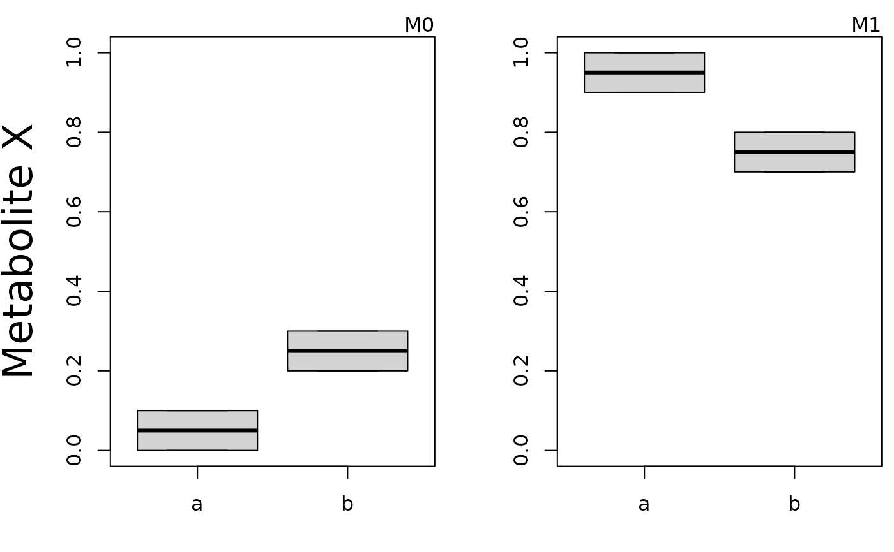
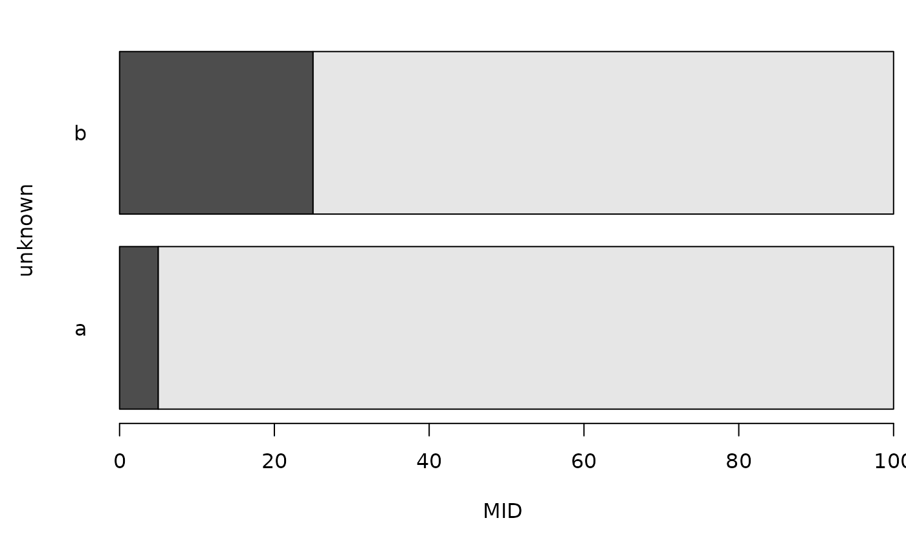
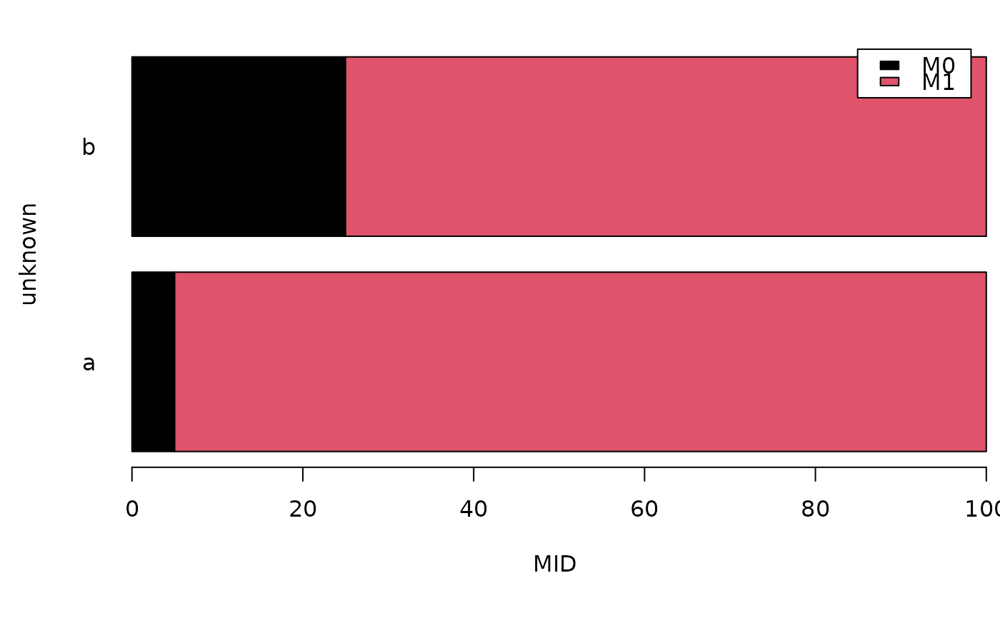

plotMID will plot Mass Isotopomer Distributions (MIDs).
Usage
plotMID(
mid = NULL,
gr = NULL,
name = "unknown",
contr = NULL,
stackedbars = FALSE,
subplot_ylim = 100,
...
)Arguments
- mid
Matrix of corrected MIDs. Samples in columns, MID values in rows.
- gr
Groups, a factor vector of length ncol(mid).
- name
Name of analyte for annotation.
- contr
Contrasts. Not yet clear if useful.
- stackedbars
Alternative plotting layout using stacked bar plot.
- subplot_ylim
Calculate `ylim` individually per subplot if 0, show full range in all subplots if 100 and limit to the minimal specified number otherwise.
- ...
Further arguments to 'boxplot' or 'barplot' (depending on parameter 'stackedbars').
Examples
mid <- matrix(c(seq(0, 0.3, 0.1), seq(1, 0.7, -0.1)), byrow = TRUE, nrow = 2)
gr <- gl(2, 2, labels = letters[1:2])
plotMID(mid = mid, gr = gr, name = "Metabolite X")

plotMID(mid = mid, gr = gr, stackedbars = TRUE, las = 1, xlab = "MID")

lt <- paste0("M", 0:1)
rownames(mid) <- lt
plotMID(mid = mid, gr = gr, stackedbars = TRUE, xlab = "MID", legend.text = lt)

plotMID(mid = mid[, 2, drop = FALSE], stackedbars = TRUE, col = c(3, 4))
 colnames(mid) <- paste0("S", 1:4)
gr2 <- gl(n = 1, k = 1, labels = "bla")
plotMID(mid = mid[, 2, drop = FALSE], gr = gr2, stackedbars = TRUE, name = NULL)
plotMID(mid = mid, gr = factor(colnames(mid)), stackedbars = TRUE, name = NULL)
colnames(mid) <- paste0("S", 1:4)
gr2 <- gl(n = 1, k = 1, labels = "bla")
plotMID(mid = mid[, 2, drop = FALSE], gr = gr2, stackedbars = TRUE, name = NULL)
plotMID(mid = mid, gr = factor(colnames(mid)), stackedbars = TRUE, name = NULL)